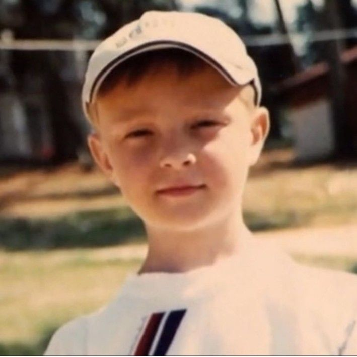

Егор Николаевич Булаткин родился 25 июня 1994 года в Пензе. Вырос в музыкальной семье: мама занималась вокалом, а папа играл в музыкальной группе.
Свои первые стихи начал писать в 11 лет, играл на гитаре. С юности увлекался хип-хопом и даже рисовал граффити.
